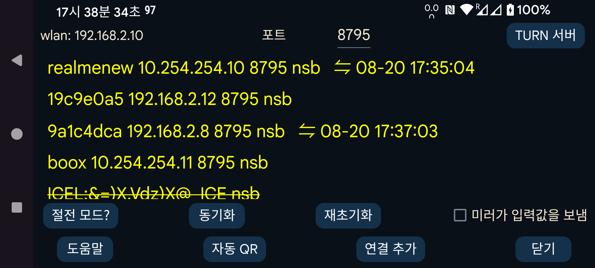

다른 기기로 데이터를 보내거나 다른 기기에서 데이터를 받습니다. Juggluco가 실행 중인 Android 기기와 연결하여 이 기기와 같은 방식으로 데이터를 표시할 수 있습니다. 미러 기기는 스캔 데이터를 받은 뒤 센서에 Bluetooth로 직접 연결할 수도 있습니다. 한 번에 한 기기만 센서와 통신하도록 하기 위해 IP/TCP를 통해 스트림 값이 들어오면 “왼쪽 메뉴→센서→Bluetooth 사용”이 자동으로 꺼집니다.
이 화면에서 “WLAN” 뒤에는 이 기기의 로컬 Wi-Fi IP 주소가 표시됩니다. 가정 네트워크에서 연결할 다른 기기(또는 원격으로 연결하는 경우 모뎀)에 이 주소를 입력하십시오.
포트 뒤에서는 이 앱이 연결을 기다리는 TCP 포트를 변경할 수 있습니다.
연결 추가를 누르면 연결할 호스트와 연결 방법을 지정할 수 있습니다.
Android에서는 여러 종류의 배터리 최적화와 백그라운드 제한 때문에 안정적인 네트워크 연결이 끊길 수 있습니다. 절전 모드를 누르면 이를 변경하는 데 도움이 되는 화면이 열립니다.
미러가 입력값 전송: 이 앱이 다른 기기에서 실행 중인 Juggluco로부터 약물, 음식 및 활동 입력값을 받는다면 여기에서는 입력값을 추가하거나 수정하면 안 됩니다. 이 옵션을 선택하면 여기에서 입력값을 추가하거나 수정할 수 없게 됩니다.
동기화는 전송할 새 데이터가 있으면 연결된 기기로 보내고, 그렇지 않으면 새 데이터를 요청합니다.
재초기화: 기존 연결을 닫고 새 연결을 만듭니다.
자동 QR: 이 휴대전화의 모든 데이터를 다른 기기의 Juggluco로 보내는 연결을 생성합니다. 다른 휴대전화에서 왼쪽 메뉴→사진을 사용하여 QR 코드를 스캔해야 합니다.
Wi-Fi(Wear OS에서만): 선택하지 않으면 Wear OS가 배터리를 절약하기 위해 일정 시간이 지난 뒤 Wi-Fi를 자동으로 끄고, Juggluco는 휴대전화와 워치 사이의 연결에 Bluetooth를 사용하도록 전환합니다. 이 옵션을 켜면 Juggluco가 Wear OS에 Wi-Fi를 계속 켜 두도록 요청하여 꺼지기까지 더 오래 걸리지만 그래도 꺼질 수 있습니다. 보통은 이 옵션이 필요하지 않으며, Wear OS 개발자들은 Wi-Fi를 계속 켜 두면 배터리 사용량이 크게 증가할 수 있다고 봅니다.
기존 연결은 목록으로 표시되며, 레이블, IP 포트, 마지막으로 성공한 동기화의 월·일·시간이 표시됩니다.
연결의 사용 방식은 다음과 같이 약어로 표시됩니다.
n: 입력값(numbers)
s: 스캔
b: 스트림(Bluetooth)
r: 수신
미러 연결에 대한 자세한 내용은 “연결 추가”의 도움말과 https://www.juggluco.nl/Juggluco/index.html#mirror를 참조하십시오.
Android 에뮬레이터(예: Genymotion)를 사용하면 Windows, Macintosh 또는 Linux 컴퓨터에서 Android용 Juggluco 앱을 실행할 수 있습니다. Linux를 사용하는 경우(MS Windows에서 Ubuntu를 실행하는 경우 포함) Waydroid도 사용할 수 있습니다. 에뮬레이터의 Juggluco는 센서에 연결된 Android 휴대전화에서 미러 연결을 통해 데이터를 받습니다. Android Studio의 Android 에뮬레이터와 Genymotion에서는 Control 키를 누른 채 마우스 포인터를 움직이면 핀치 동작(두 손가락을 서로 가까이 또는 멀리 움직이는 동작)을 흉내낼 수 있습니다. Waydroid는 이를 지원하지 않지만 Juggluco 자체에서 이 동작을 구현합니다.